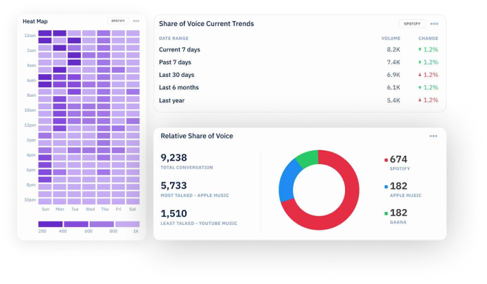
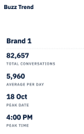
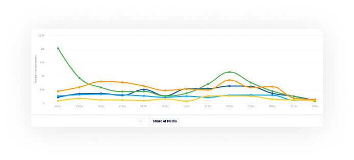
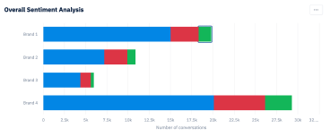
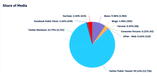

Why Konnect Insights is the
Best Social Studio Alternative?
Create rules to
automate pushing
tickets
automate pushing
tickets
Seamlessly sync
status in both
systems
status in both
systems
Achieve
field/object
mapping
field/object
mapping

Respond to social
media tickets from
salesforce
media tickets from
salesforce
Send social media
tickets & contacts
to Salesforce
tickets & contacts
to Salesforce
No CC Required
3000+ Integrations & 100% Data Coverage Across the Internet!
One-View of
the customer in
Salesforce
the customer in
Salesforce
Empowers agents with
real-time access to social
media conversations
real-time access to social
media conversations
Lead generation from
social media created as
opportunities in SFDC
social media created as
opportunities in SFDC
No CC Required
Unify your
Customer Care and
Marketing Insights
Stop spending on 10+ tools and save up to 91% of your SaaS spend.
Listen to online web, Social Media and a lot more
Do not miss out on any conversation anywhere on the web.
Listen to your customer's voice, engage with them and make
them happier
Listen to your customer's voice, engage with them and make
them happier
Get Market Intelligence
Analyze customer data from anywhere on the web and social
media. Get real-time market intelligence. Fine-tune your
strategies and make valuable business decisions
media. Get real-time market intelligence. Fine-tune your
strategies and make valuable business decisions
Creative Asset Library
Pre-save all your content, including text and media, in the
creative asset library. Easily pick them up for publishing and
scheduling, giving your design and content teams the flexibility
to plan and execute your campaigns and festivals
creative asset library. Easily pick them up for publishing and
scheduling, giving your design and content teams the flexibility
to plan and execute your campaigns and festivals

Conversations as Tickets
View all conversations related to your brand in the form of
support tickets, which give you a detailed overview of the
customers and their queries in terms of history, analytics,
followers, and influence. Based on this, you can define
priorities for response management
support tickets, which give you a detailed overview of the
customers and their queries in terms of history, analytics,
followers, and influence. Based on this, you can define
priorities for response management
Escalations & auto assignment
You have the flexibility to check with external teams who are
not a part of the tool regarding responses through email
escalations by adding the conversation details. You can also
auto-assign queries to appropriate users/groups based on the
rules you define, thus reducing time
not a part of the tool regarding responses through email
escalations by adding the conversation details. You can also
auto-assign queries to appropriate users/groups based on the
rules you define, thus reducing time
Creative Asset Library
Get a complete view of all the tickets that are at various
stages
of resolution, check TAT scores, and identify areas that
need more action. Measure the impact by analyzing the difference
in sentiment based on your efforts
of resolution, check TAT scores, and identify areas that
need more action. Measure the impact by analyzing the difference
in sentiment based on your efforts




Automation and workflows
Workflows and automation such as queuing, ticket history,
auto-assignment and classification, draft templates, and many
more to ensure your agents are empowered to respond to and
resolve queries in a timely manner
auto-assignment and classification, draft templates, and many
more to ensure your agents are empowered to respond to and
resolve queries in a timely manner
Agent performance
Track and measure How are your agents performing with
various TAT reports and SLAs to be able to identify the hits
and misses and ensure the right actions are taken in terms of
agent productivity?
various TAT reports and SLAs to be able to identify the hits
and misses and ensure the right actions are taken in terms of
agent productivity?
One view of the customer
Have all your customer query data points, including web and
social, in one place to be able to have a holistic view of the
customer, including the query history, details, etc, and use this
information for better CXM
social, in one place to be able to have a holistic view of the
customer, including the query history, details, etc, and use this
information for better CXM


Analytics and Benchmarking
With over 700 charts covering various aspects of listening,
social media analytics, competitor analytics, and agent
performance reports, you get a comprehensive and holistic
view of your brand's perception and performance in terms of
customer experience management and marketing
social media analytics, competitor analytics, and agent
performance reports, you get a comprehensive and holistic
view of your brand's perception and performance in terms of
customer experience management and marketing
KISS - Konnect Insights Smart Suggestions
In simple plain English, understand complex metrics that are
easy to remember. Insights are presented in a way humans
speak and with the right pictures. Understand what has
worked for you and get suggestions on what will work for you
with AI-powered smart suggestions
easy to remember. Insights are presented in a way humans
speak and with the right pictures. Understand what has
worked for you and get suggestions on what will work for you
with AI-powered smart suggestions
Content Strategy
With all your insights in one platform, identify trends, pain
points, hits and misses, moments when your audience is
active, and much more to quickly shape align messaging into
consumer-relevant and engagement-driven
points, hits and misses, moments when your audience is
active, and much more to quickly shape align messaging into
consumer-relevant and engagement-driven

Social Media Management
Easily and effectively publish or schedule posts on social
media across multiple channels and multiple accounts,
simultaneously, preview them on different devices, and check
them out on a content calendar for a 360-degree view of all
your posts
media across multiple channels and multiple accounts,
simultaneously, preview them on different devices, and check
them out on a content calendar for a 360-degree view of all
your posts
Approval process
Ensure the right and correct content goes live on social media
channels using the approval-rejection feature, facilitating easy
collaboration between brands, agencies, and teams for the
right representation of the brand
channels using the approval-rejection feature, facilitating easy
collaboration between brands, agencies, and teams for the
right representation of the brand
Creative Asset Library
Pre-save all your content, including text and media, in the
creative asset library. Easily pick them up for publishing and
scheduling, giving your design and content teams the flexibility
to plan and execute your campaigns and festivals
creative asset library. Easily pick them up for publishing and
scheduling, giving your design and content teams the flexibility
to plan and execute your campaigns and festivals

Customer Satisfaction Surveys
If your customers are really satisfied, Send Csat-Customer
Satisfaction Surveys that are linked to your customer care
module and learn from your customers about the agent's
performance
Satisfaction Surveys that are linked to your customer care
module and learn from your customers about the agent's
performance
Link to Social Listening
Get the best ideas from those who matter the most—your
customers. Analyze all insights in unified dashboards with
classifications created for social listening
customers. Analyze all insights in unified dashboards with
classifications created for social listening
Market Research
Expand your market research capabilities to keep track of your
brand, test your ideas, or get a gut check with your target
audience. Share learning across your organization
brand, test your ideas, or get a gut check with your target
audience. Share learning across your organization

Customised Dashboards
Create dashboards for various stakeholders by simply
dragging and dropping charts from the chart library or charts
created from BI tools. Bring in your external data sources too
to create dashboards
dragging and dropping charts from the chart library or charts
created from BI tools. Bring in your external data sources too
to create dashboards
Create your own charts
Create any type of chart using advanced features such as
pivoting, defining your own filters, columns, dimensions, and
measures, which are completely tailored to your needs while
going granular, equipping you with intelligent insights for better
business decisions
pivoting, defining your own filters, columns, dimensions, and
measures, which are completely tailored to your needs while
going granular, equipping you with intelligent insights for better
business decisions
Flexible reporting
Shareable and collaborative dashboards and charts with the
ability to add your own notes or inferences. You won't find the
need to download data in excel spreadsheets or make ppts.
Save time and share live dashboards
ability to add your own notes or inferences. You won't find the
need to download data in excel spreadsheets or make ppts.
Save time and share live dashboards
Themes and Brand colors
Create your own themes to match your brand colors. Or define
chart colors to match the brand and competition. Use various
color palettes to make visually stunning dashboards
chart colors to match the brand and competition. Use various
color palettes to make visually stunning dashboards

Identify crisis
Ensure you are aware of any impending crisis that could affect
your brand and be ready for it. Use keywords, hashtags and
other parameters such as follower count, to monitor situations
that can lead to crisis
your brand and be ready for it. Use keywords, hashtags and
other parameters such as follower count, to monitor situations
that can lead to crisis
Get notified real time
Once you have defined the parameters to identify crises, you
will get real time alerts based on them. You can ensure that
you don't miss out on these notifications by choosing to be
alerted on mobile apps and/or email
will get real time alerts based on them. You can ensure that
you don't miss out on these notifications by choosing to be
alerted on mobile apps and/or email
Take Action
Prepare a crisis management and mitigation plan by looking at
analytics and data. Respond to queries in real time and use
workflows to enhance their productivity and TATs and identify
and mobilise influencers to counter crises
analytics and data. Respond to queries in real time and use
workflows to enhance their productivity and TATs and identify
and mobilise influencers to counter crises